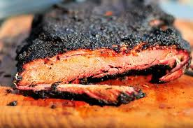

BBQ Brisket
Home

Description
This is a classic BBQ recipe for making smoked brisket. Brikset is renowned for its savory flavor and melt in your mouth texture.
It is also known for what a challening cook it can be. By following these instructions and exercising patience, you too can make a delicious
brikset.
Ingredients
- 12-18 lbs brisket
- salt
- pepper
- Optional: BBQ rub of your choice like 4Rivers Coffee Rub
- Butcher Paper
Steps
- Remove brisket from packagine and trim off excess fat. Try to keep fat cap layer to around 1/4" or so.
- Cover brisket in either salt/pepper or bbq rub of your choice.
- Optional: Allow brisket to sit with rub in refrigerater for several hours or overnight.
- Start smoker and get temperature running low between 175-225°F.
- Insert meat thermometer probe into brisket.
- Once smoker is at temp, place brisket on smoker and let it sit for about 5 hours.
- After 5 hours, increase smoker temp to 275°F or so.
- Optional: Once internal temperature of brisket gets to 165°F or so, you can wrap brisket in butcher paper and put back on the smoker
- Continue smoking brisket until internal temperature reaches 195-205°F.
- Probe should feel like it's going into butter when brikset is done. Take brisket off smoker and allow to rest wrapped and covered for one hour.
- After rest, slice brikset against the grain.